Focus
Education, GDP, unemployment
Source
Eurostat CSV exports
Scope
27 EU countries, 2015-2024
Tools
Python, pandas, SciPy, seaborn
I started this project because I was curious if I could find relationships between education, income, and unemployment in EU data. I wanted to see if there is data that supports the common assumption that countries with higher education levels tend to have higher income and lower unemployment.
I used Eurostat data to compare the share of 25-34 year olds with tertiary education, GDP per capita, and unemployment across the 27 EU countries.
I imported the three CSV files into Python, cleaned the column names, filtered the data down to the 27 EU countries, and merged everything by country and year. That gave me 270 complete data points for 2015-2024 with no missing values after the merge.
From there I checked basic summaries and then calculated Pearson correlations country by country to see how strong the relationships were over time.
Python, pandas, NumPy, SciPy, matplotlib, seaborn, and linear regression. On the data side I worked with Eurostat CSV exports and a merged country-year table.
The main limitation of this analysis is that correlation does not imply causation. Even when two variables show a strong statistical relationship, this does not demonstrate that one causes the other. In addition, the analysis focuses on correlations within countries over time, which may not capture broader differences between countries.
The analysis revealed several interesting patterns. Luxembourg consistently stood out as an outlier in GDP per capita, while Spain had the highest unemployment rate between 2021 and 2024. Overall, most countries showed relationships that were consistent with the hypotheses, although the strength of these relationships varied considerably.
The biggest takeaway for me was not simply that the variables are correlated, but also how important it is to interpret statistical results carefully. This project reinforced the value of data cleaning, exploratory analysis, and critical thinking when drawing conclusions from real-world data.
Hypothesis 1: EU countries with a higher share of university graduates (education rate) show a higher GDP per capita.
Hypothesis 2: EU countries with a higher education rate have a lower unemployment rate.
Hypothesis 3: EU countries with a higher GDP per capita have a lower unemployment rate.
All data comes from Eurostat
# Import necessary libraries for data analysis and visualization
import pandas as pd # Data manipulation and analysis
import numpy as np # Numerical computing
from scipy.stats import pearsonr # Calculation of the Pearson correlation coefficient
import matplotlib.pyplot as plt # Creation of plots and visualizations
import seaborn as sns # Statistical data visualization
from sklearn.linear_model import LinearRegression # Linear regression modeling# Data import from Eurostat CSV files in the folder
df_ed = pd.read_csv('estat_edat_lfse_03_filtered_en.csv', usecols=['geo','TIME_PERIOD','OBS_VALUE']) # Education rate (tertiary education, ages 25-34)
df_gdp = pd.read_csv('estat_nama_10_pc_filtered_en.csv', usecols=['geo','TIME_PERIOD','OBS_VALUE']) # GDP per capita in PPS
df_unemp = pd.read_csv('estat_une_rt_a_filtered_en.csv', usecols=['geo','TIME_PERIOD','OBS_VALUE']) # Unemployment rate (ages 15-74)# Display the first 10 rows of the education rate dataset
df_ed.head(10)| geo | TIME_PERIOD | OBS_VALUE | |
|---|---|---|---|
| 0 | Austria | 2013 | 24.9 |
| 1 | Austria | 2014 | 38.4 |
| 2 | Austria | 2015 | 38.6 |
| 3 | Austria | 2016 | 39.7 |
| 4 | Austria | 2017 | 40.3 |
| 5 | Austria | 2018 | 40.5 |
| 6 | Austria | 2019 | 41.6 |
| 7 | Austria | 2020 | 41.4 |
| 8 | Austria | 2021 | 42.4 |
| 9 | Austria | 2022 | 43.1 |
#Rename columns for clearer handling
df_ed.rename(columns={'geo': 'country', 'TIME_PERIOD': 'year', 'OBS_VALUE': 'education_rate'}, inplace=True)
df_gdp.rename(columns={'geo': 'country', 'TIME_PERIOD': 'year', 'OBS_VALUE': 'gdp_per_capita'}, inplace=True)
df_unemp.rename(columns={'geo': 'country', 'TIME_PERIOD': 'year', 'OBS_VALUE': 'unemployment_rate'}, inplace=True)
df_ed['country'].unique() #Show all countries in the education dataset (same for GDP and unemployment datasets)| country | |||
|---|---|---|---|
| 0 | Austria | 19 | Lithuania |
| 1 | Bosnia and Herzegovina | 20 | Luxembourg |
| 2 | Belgium | 21 | Latvia |
| 3 | Bulgaria | 22 | Montenegro |
| 4 | Switzerland | 23 | North Macedonia |
| 5 | Cyprus | 24 | Malta |
| 6 | Czechia | 25 | Netherlands |
| 7 | Germany | 26 | Norway |
| 8 | Denmark | 27 | Poland |
| 9 | Estonia | 28 | Portugal |
| 10 | Greece | 29 | Romania |
| 11 | Spain | 30 | Serbia |
| 12 | European Union - 27 countries (from 2020) | 31 | Sweden |
| 13 | Finland | 32 | Slovenia |
| 14 | France | 33 | Slovakia |
| 15 | Croatia | 34 | Türkiye |
| 16 | Hungary | 35 | United Kingdom |
| 17 | Ireland | ||
| 18 | Iceland |
# England, Switzerland and the European Union itself need to be excluded so only EU countries are included# Create list with only EU countries
eu_countries = [
"Austria", "Belgium", "Bulgaria", "Croatia", "Cyprus", "Czechia", "Denmark", "Estonia", "Finland",
"France", "Germany", "Greece", "Hungary", "Ireland", "Italy", "Latvia", "Lithuania", "Luxembourg",
"Malta", "Netherlands", "Poland", "Portugal", "Romania", "Slovakia", "Slovenia", "Spain", "Sweden"]# Filter only EU countries
df_ed = df_ed[df_ed['country'].isin(eu_countries)]
df_gdp = df_gdp[df_gdp['country'].isin(eu_countries)]
df_unemp = df_unemp[df_unemp['country'].isin(eu_countries)]
print(df_ed['country'].describe()) #Check ob alle drin sind 27 brauchen wir# Filter the dataframes to include only EU countries
df_ed = df_ed[df_ed['country'].isin(eu_countries)]
df_gdp = df_gdp[df_gdp['country'].isin(eu_countries)]
df_unemp = df_unemp[df_unemp['country'].isin(eu_countries)]
print(df_ed['country'].describe()) #Check if all 27 EU countries are includedcount 324
unique 27
top Austria
freq 12
Name: country, dtype: object# Merge the three datasets on 'country' and 'year' to create a single dataframe
df = pd.merge(df_ed, df_gdp, on=['country','year'], how='inner')
df = pd.merge(df, df_unemp, on=['country','year'], how='inner')print(df.head(10)) #check wie es aussieht| country | year | education_rate | gdp_per_capita | unemployment_rate | |
|---|---|---|---|---|---|
| 0 | Austria | 2015 | 38.6 | 35681.6 | 6.1 |
| 1 | Austria | 2016 | 39.7 | 36385.4 | 6.5 |
| 2 | Austria | 2017 | 40.3 | 37011.9 | 5.9 |
| 3 | Austria | 2018 | 40.5 | 38414.6 | 5.2 |
| 4 | Austria | 2019 | 41.6 | 39259.3 | 4.8 |
| 5 | Austria | 2020 | 41.4 | 37382.4 | 6.0 |
| 6 | Austria | 2021 | 42.4 | 40182.4 | 6.2 |
| 7 | Austria | 2022 | 43.1 | 44418.8 | 4.8 |
| 8 | Austria | 2023 | 43.5 | 46171.3 | 5.1 |
| 9 | Austria | 2024 | 44.1 | 46883.1 | 5.2 |
print(df.describe()) # Check data| year | education_rate | gdp_per_capita | unemployment_rate | |
|---|---|---|---|---|
| count | 270.000000 | 270.000000 | 270.000000 | 270.000000 |
| mean | 2019.500000 | 42.815926 | 33419.221111 | 7.087037 |
| std | 2.877615 | 9.293456 | 14723.817925 | 3.665951 |
| min | 2015.000000 | 22.500000 | 13586.800000 | 2.000000 |
| 25% | 2017.000000 | 35.325000 | 23937.850000 | 4.925000 |
| 50% | 2019.500000 | 42.900000 | 30361.900000 | 6.300000 |
| 75% | 2022.000000 | 48.500000 | 37447.950000 | 8.000000 |
| max | 2024.000000 | 65.200000 | 96249.000000 | 25.000000 |
# 270 data points (27 countries × 10 years) - that is correct.print(df.info()) #Check data types| # | Column | Non-Null Count | Dtype |
|---|---|---|---|
| 0 | country | 270 non-null | object |
| 1 | year | 270 non-null | int64 |
| 2 | education_rate | 270 non-null | float64 |
| 3 | gdp_per_capita | 270 non-null | float64 |
| 4 | unemployment_rate | 270 non-null | float64 |
print(df.isnull().sum()) #Check for values=0; looks good. | 0 | |
|---|---|
| country | 0 |
| year | 0 |
| education_rate | 0 |
| gdp_per_capita | 0 |
| unemployment_rate | 0 |
print(df.isna().sum()) #Check for missing values; looks good. | 0 | |
|---|---|
| country | 0 |
| year | 0 |
| education_rate | 0 |
| gdp_per_capita | 0 |
| unemployment_rate | 0 |
After merging the three data sources, the combined dataset df has the following structure:
After the merge, the data only contains country-year combinations for which all three indicators are available.
The datasets have now been merged and cleaned and can be used for the exploratory analysis.
Let's explore the dataset and have a look at the yearly extremes in the dataset, to see which countries had the highest unemployment, education and GDP per capita over the years.
# For each year: sort by unemployment rate descending
ranking = df.sort_values(['year', 'unemployment_rate'], ascending=[True, False])
# Show only the country with the highest rate per year
top_per_year = ranking.groupby('year').first().reset_index()
print(top_per_year[['year', 'country', 'unemployment_rate']])year country unemployment_rate 0 2015 Greece 25.0 1 2016 Greece 23.9 2 2017 Greece 21.8 3 2018 Greece 19.7 4 2019 Greece 17.9 5 2020 Greece 17.6 6 2021 Spain 14.9 7 2022 Spain 13.0 8 2023 Spain 12.2 9 2024 Spain 11.4
Greece had the highest unemployment rate in the EU from 2015 to 2020; from 2021 to 2024 Spain had the highest unemployment rate.
# For each year: sort by education rate descending
ranking = df.sort_values(['year', 'education_rate'], ascending=[True, False])
# Show only the country with the highest rate per year
top_per_year = ranking.groupby('year').first().reset_index()
print(top_per_year[['year', 'country', 'education_rate']])year country education_rate 0 2015 Lithuania 54.8 1 2016 Cyprus 56.2 2 2017 Cyprus 57.0 3 2018 Cyprus 58.5 4 2019 Cyprus 59.1 5 2020 Luxembourg 60.6 6 2021 Luxembourg 62.6 7 2022 Ireland 63.0 8 2023 Ireland 62.7 9 2024 Ireland 65.2
The country with the highest education rate (share of 25-34 year olds with a tertiary degree) changed several times over the years, but the maximum share keeps rising.
# For each year: sort by GDP per capita descending
ranking = df.sort_values(['year', 'gdp_per_capita'], ascending=[True, False])
# Show only the country with the highest value per year
top_per_year = ranking.groupby('year').first().reset_index()
print(top_per_year[['year', 'country', 'gdp_per_capita']])year country gdp_per_capita 0 2015 Luxembourg 77581.8 1 2016 Luxembourg 78464.8 2 2017 Luxembourg 78895.5 3 2018 Luxembourg 78975.8 4 2019 Luxembourg 78735.2 5 2020 Luxembourg 77882.3 6 2021 Luxembourg 87091.5 7 2022 Luxembourg 89574.0 8 2023 Luxembourg 93488.9 9 2024 Luxembourg 96249.0
Luxembourg has the highest GDP per capita in the EU, every year in the dataset.
Let's compare the countries and if we can find a relationship between GDP per capita and education rate for the year 2024.
# Scatter plot: education rate vs. GDP per capita (using the latest available year)
latest_year = df['year'].max()
df_latest = df[df['year'] == latest_year]
# Calculate the Pearson correlation between education rate and GDP per capita
r = df_latest['education_rate'].corr(df_latest['gdp_per_capita'])
# Run a linear regression
X = df_latest[['education_rate']]
y = df_latest['gdp_per_capita']
model = LinearRegression().fit(X, y)
y_pred = model.predict(X)
r_squared = model.score(X, y)
# Create scatter plot with regression line
plt.figure(figsize=(6, 4))
sns.regplot(data=df_latest, x='education_rate', y='gdp_per_capita',
ci=None, scatter_kws={'alpha': 0.7})
# Label country abbreviations next to each point
for _, row in df_latest.iterrows():
short = row['country'][:3]
plt.text(row['education_rate'] + 0.2,
row['gdp_per_capita'] + 200,
short, fontsize=8)
plt.title(f'GDP per capita vs. education rate in EU countries ({df_latest["year"].iloc[0]})')
plt.xlabel('Share of university graduates (25-34 yrs, %)')
plt.ylabel('GDP per capita')
plt.tight_layout()
plt.show()
print(f"Pearson correlation (r): {r:.2f}")
print(f"Coefficient of determination (R2): {r_squared:.2f}")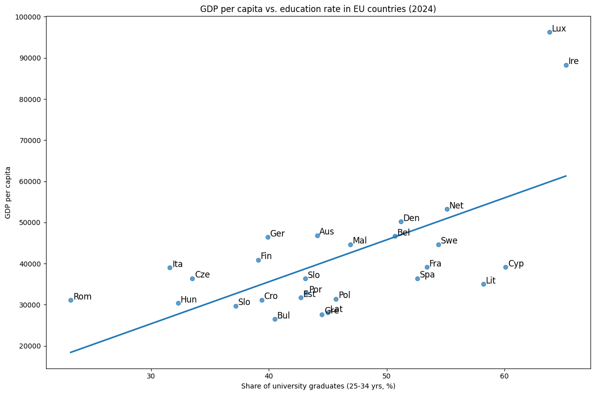
Pearson correlation (r): 0.63 Coefficient of determination (R2): 0.40
Luxembourg and Ireland could be outliers. This is checked in the next step.
# Interquartile Range (IQR) method to detect outliers in GDP per capita
Q1 = df_latest['gdp_per_capita'].quantile(0.25)
Q3 = df_latest['gdp_per_capita'].quantile(0.75)
IQR = Q3 - Q1
upper = Q3 + 1.5 * IQR
# Identify countries with unusually high GDP per capita
outliers_iqr = df_latest[df_latest['gdp_per_capita'] > upper]
print("Countries with unusually high GDP per capita (outliers):")
print(outliers_iqr[['country', 'gdp_per_capita']])Countries with unusually high GDP per capita (outliers):
country gdp_per_capita
149 Ireland 88284.9
179 Luxembourg 96249.0
# Check whether the education rate also has outliers
Q1 = df_latest['education_rate'].quantile(0.25)
Q3 = df_latest['education_rate'].quantile(0.75)
IQR = Q3 - Q1
lower = Q1 - 1.5 * IQR
upper = Q3 + 1.5 * IQR
outliers_high = df_latest[df_latest['education_rate'] > upper]
outliers_low = df_latest[df_latest['education_rate'] < lower]
print("Countries with unusually HIGH education rate:")
print(outliers_high[['country', 'education_rate']])
print("Countries with unusually LOW education rate:")
print(outliers_low[['country', 'education_rate']])Countries with unusually HIGH education rate: Empty DataFrame Columns: [country, education_rate] Countries with unusually LOW education rate: Empty DataFrame Columns: [country, education_rate]
The education rate has no outliers. Luxembourg and Ireland are outliers in GDP per capita and are removed for the following comparison plot.
# List of EU countries without the GDP outliers
eu_ohn_aus = [
"Austria", "Belgium", "Bulgaria", "Croatia", "Cyprus", "Czechia", "Denmark", "Estonia", "Finland",
"France", "Germany", "Greece", "Hungary", "Italy", "Latvia", "Lithuania",
"Malta", "Netherlands", "Poland", "Portugal", "Romania", "Slovakia", "Slovenia", "Spain", "Sweden"
]
# Filter the dataframe to exclude the outlier countries
df_ohn_aus = df[df['country'].isin(eu_ohn_aus)]
print(df_ohn_aus['country'].describe())# Scatterplot: education rate vs GDP per capita (using e.g. data from the most recent available year)
latest_year = df_ohn_aus['year'].max()
df_ohn_aus_latest = df_ohn_aus[df_ohn_aus['year'] == latest_year]
# Calculate Pearson correlation between education rate and GDP per capita
r = df_ohn_aus_latest['education_rate'].corr(df_ohn_aus_latest['gdp_per_capita'])
# Perform linear regression
X = df_ohn_aus_latest[['education_rate']] # Independent variable
y = df_ohn_aus_latest['gdp_per_capita'] # Dependent variable
model = LinearRegression().fit(X, y) # Train the model
y_pred = model.predict(X) # Predict y coordinates given x
r_squared = model.score(X, y) # Calculate the coefficient of determination (R²)
# Create scatterplot with regression line
plt.figure(figsize=(12, 8))
sns.regplot(data=df_ohn_aus_latest, x='education_rate', y='gdp_per_capita',
ci=None, scatter_kws={'alpha': 0.7, 's': 80}) #ci=None: show trend line only, no confidence interval
# Add country abbreviations (first 3 letters) next to each point
for _, row in df_ohn_aus_latest.iterrows():
short = row['country'][:3] # Extract first 3 letters of the country name
plt.text(row['education_rate'] + 0.3,
row['gdp_per_capita'] + 400,
short, fontsize=12)
plt.title(f'GDP per Capita vs. Education Rate in EU Countries ({df_ohn_aus_latest["year"].iloc[0]})', fontsize=16)
plt.xlabel('Share of tertiary graduates (25–34 yrs, %)', fontsize=13)
plt.ylabel('GDP per Capita', fontsize=13)
plt.xticks(fontsize=11)
plt.yticks(fontsize=11)
plt.tight_layout()
plt.show()
# 9. Output the results
print(f"Pearson correlation (r): {r:.2f}")
print(f"Coefficient of determination (R²): {r_squared:.2f}")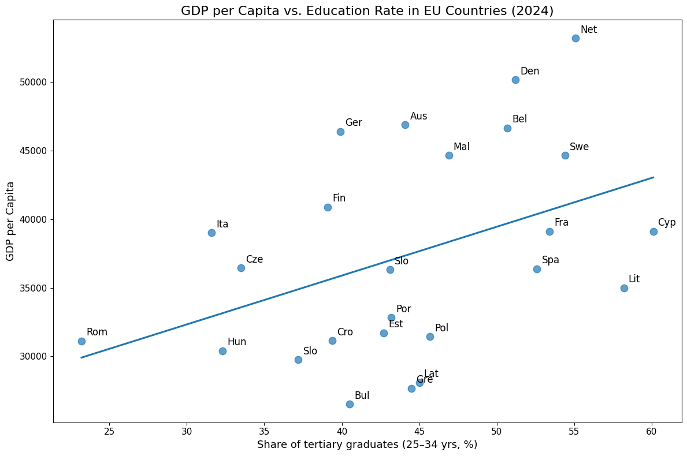
Pearson correlation (r): 0.42 Coefficient of determination (R2): 0.18
Removing Luxembourg and Ireland lowers the correlation from r=0.63 to r=0.42. This shows that Luxembourg's extreme GDP per capita was inflating the positive relationship between education rate and GDP. For the rest of the analysis, countries are no longer compared against each other cross-sectionally. Instead, each country is analyzed individually over time, so outliers are not removed anymore.
Hypothesis 1: EU countries with a higher share of university graduates (education rate) show a higher GDP per capita.
We now investigate whether there is a positive relationship between the education rate and economic performance (GDP per capita), analyzing each country individually over time.
# Calculate the correlation between education rate and GDP for each country over time
results_h1 = []
for country in df['country'].unique():
country_data = df[df['country'] == country]
# Pearson correlation between education rate and GDP per capita
correlation, p_value = pearsonr(country_data['education_rate'], country_data['gdp_per_capita'])
# Store the results
results_h1.append({
'country': country,
'correlation': correlation,
'p_value': p_value
})
# Results as a DataFrame
df_corr_h1 = pd.DataFrame(results_h1)
# Sort by correlation strength
df_corr_h1_sorted = df_corr_h1.sort_values('correlation', ascending=False).reset_index(drop=True)
df_corr_h1_sorted.index += 1
print(df_corr_h1_sorted)| country | correlation | p_value | |
|---|---|---|---|
| 1 | Ireland | 0.980037 | 6.783330e-07 |
| 2 | Sweden | 0.971168 | 2.919879e-06 |
| 3 | Denmark | 0.949943 | 2.585233e-05 |
| 4 | Austria | 0.933772 | 7.766263e-05 |
| 5 | Malta | 0.933391 | 7.942708e-05 |
| 6 | Germany | 0.930662 | 9.295156e-05 |
| 7 | Lithuania | 0.928847 | 1.028447e-04 |
| 8 | France | 0.925841 | 1.209060e-04 |
| 9 | Italy | 0.910265 | 2.542595e-04 |
| 10 | Estonia | 0.908424 | 2.751487e-04 |
| 11 | Cyprus | 0.901381 | 3.668321e-04 |
| 12 | Croatia | 0.875451 | 9.034665e-04 |
| 13 | Netherlands | 0.855010 | 1.616963e-03 |
| 14 | Bulgaria | 0.843858 | 2.144220e-03 |
| 15 | Latvia | 0.841011 | 2.296607e-03 |
| 16 | Spain | 0.839270 | 2.393550e-03 |
| 17 | Belgium | 0.823512 | 3.410105e-03 |
| 18 | Luxembourg | 0.768564 | 9.390887e-03 |
| 19 | Greece | 0.700958 | 2.392955e-02 |
| 20 | Portugal | 0.632760 | 4.959171e-02 |
| 21 | Czechia | 0.562359 | 9.061432e-02 |
| 22 | Slovakia | 0.492723 | 1.479271e-01 |
| 23 | Poland | 0.355533 | 3.133481e-01 |
| 24 | Hungary | 0.292496 | 4.121534e-01 |
| 25 | Slovenia | 0.118189 | 7.450435e-01 |
| 26 | Finland | -0.394207 | 2.596454e-01 |
| 27 | Romania | -0.799802 | 5.476242e-03 |
# Split countries into significant (p < 0.05) and not significant
significant_h1 = df_corr_h1[df_corr_h1['p_value'] < 0.05].sort_values('correlation', ascending=False).reset_index(drop=True)
significant_h1.index += 1
not_significant_h1 = df_corr_h1[df_corr_h1['p_value'] >= 0.05].sort_values('correlation', ascending=False).reset_index(drop=True)
not_significant_h1.index += 1
print("Significant correlations (p < 0.05)")
print(significant_h1)
print("Not significant correlations (p >= 0.05)")
print(not_significant_h1)| country | correlation | p_value | |
|---|---|---|---|
| 1 | Ireland | 0.980037 | 6.783330e-07 |
| 2 | Sweden | 0.971168 | 2.919879e-06 |
| 3 | Denmark | 0.949943 | 2.585233e-05 |
| 4 | Austria | 0.933772 | 7.766263e-05 |
| 5 | Malta | 0.933391 | 7.942708e-05 |
| 6 | Germany | 0.930662 | 9.295156e-05 |
| 7 | Lithuania | 0.928847 | 1.028447e-04 |
| 8 | France | 0.925841 | 1.209060e-04 |
| 9 | Italy | 0.910265 | 2.542595e-04 |
| 10 | Estonia | 0.908424 | 2.751487e-04 |
| 11 | Cyprus | 0.901381 | 3.668321e-04 |
| 12 | Croatia | 0.875451 | 9.034665e-04 |
| 13 | Netherlands | 0.855010 | 1.616963e-03 |
| 14 | Bulgaria | 0.843858 | 2.144220e-03 |
| 15 | Latvia | 0.841011 | 2.296607e-03 |
| 16 | Spain | 0.839270 | 2.393550e-03 |
| 17 | Belgium | 0.823512 | 3.410105e-03 |
| 18 | Luxembourg | 0.768564 | 9.390887e-03 |
| 19 | Greece | 0.700958 | 2.392955e-02 |
| 20 | Portugal | 0.632760 | 4.959171e-02 |
| 21 | Romania | -0.799802 | 5.476242e-03 |
| country | correlation | p_value | |
|---|---|---|---|
| 1 | Czechia | 0.562359 | 0.090614 |
| 2 | Slovakia | 0.492723 | 0.147927 |
| 3 | Poland | 0.355533 | 0.313348 |
| 4 | Hungary | 0.292496 | 0.412153 |
| 5 | Slovenia | 0.118189 | 0.745043 |
| 6 | Finland | -0.394207 | 0.259645 |
# Visualization: bar chart of the correlations (sorted)
plt.figure(figsize=(10, 8))
# Color significant vs. non-significant countries differently
colors = ['green' if p < 0.05
else 'lightgray' for p in df_corr_h1_sorted['p_value']]
plt.barh(df_corr_h1_sorted['country'], df_corr_h1_sorted['correlation'], color=colors)
plt.xlabel('Pearson correlation (education vs. GDP)', fontsize=12)
plt.ylabel('Country', fontsize=12)
plt.title('Correlation between education rate and GDP per capita\n(green = significant p<0.05)', fontsize=14, fontweight='bold')
plt.axvline(x=0, color='black', linestyle='--', linewidth=0.8)
plt.grid(axis='x', alpha=0.3)
plt.tight_layout()
plt.show()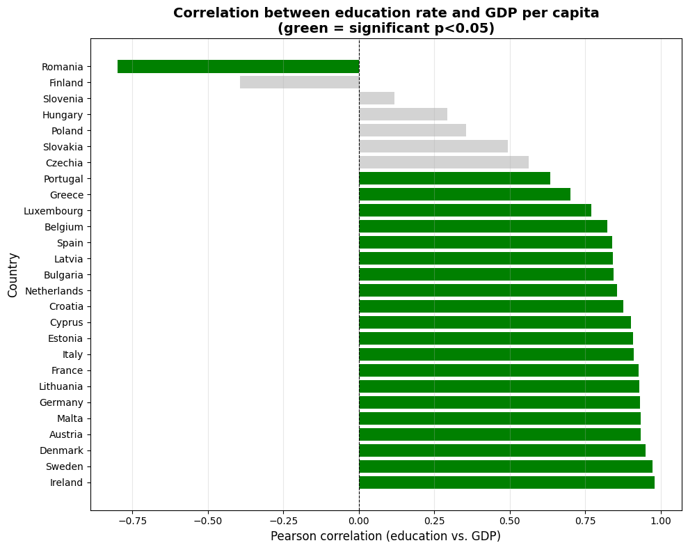
Result: In 21 of 27 EU countries (78%), there is a statistically significant positive correlation between the education rate and GDP per capita (p < 0.05).
Countries like Ireland (r=0.98), Sweden (r=0.97), and Denmark (r=0.95) show very strong positive relationships
In most EU countries, GDP per capita rises when the share of university graduates rises
# Choose the country with the strongest correlation
best_country = significant_h1.iloc[3]['country']
data_best = df[df['country'] == best_country]
# Create plot with two y-axes
fig, ax1 = plt.subplots(figsize=(10, 6))
# Plot education rate (blue line)
ax1.plot(data_best['year'], data_best['education_rate'],
color='blue', marker='o', linewidth=2, label='Education rate')
ax1.set_xlabel('Year', fontsize=12)
ax1.set_ylabel('Education rate (%)', color='blue', fontsize=12)
ax1.tick_params(axis='y', labelcolor='blue')
ax1.grid(alpha=0.3)
# Plot GDP (red line, other axis)
ax2 = ax1.twinx()
ax2.plot(data_best['year'], data_best['gdp_per_capita'],
color='red', marker='s', linewidth=2, label='GDP per capita')
ax2.set_ylabel('GDP per capita (PPS)', color='red', fontsize=12)
ax2.tick_params(axis='y', labelcolor='red')
# Title
plt.title(f'{best_country}: Education and GDP over time', fontsize=14, fontweight='bold')
plt.tight_layout()
plt.show()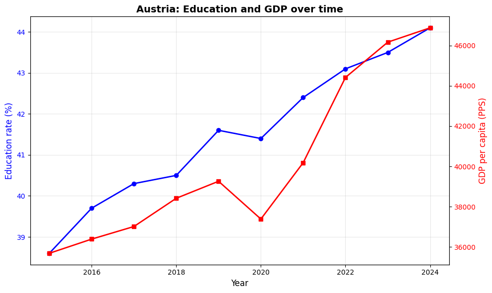
# Example: Country without significant correlation
weak_country = not_significant_h1.iloc[3]['country']
data_weak = df[df['country'] == weak_country]
fig, ax1 = plt.subplots(figsize=(10, 6))
# Education rate
ax1.plot(data_weak['year'], data_weak['education_rate'],
color='blue', marker='o', linewidth=2)
ax1.set_xlabel('Year', fontsize=12)
ax1.set_ylabel('Education rate (%)', color='blue', fontsize=12)
ax1.tick_params(axis='y', labelcolor='blue')
ax1.grid(alpha=0.3)
# GDP
ax2 = ax1.twinx()
ax2.plot(data_weak['year'], data_weak['gdp_per_capita'],
color='red', marker='s', linewidth=2)
ax2.set_ylabel('GDP per capita (PPS)', color='red', fontsize=12)
ax2.tick_params(axis='y', labelcolor='red')
plt.title(f'{weak_country}: Education and GDP over time (no correlation)', fontsize=14, fontweight='bold')
plt.tight_layout()
plt.show()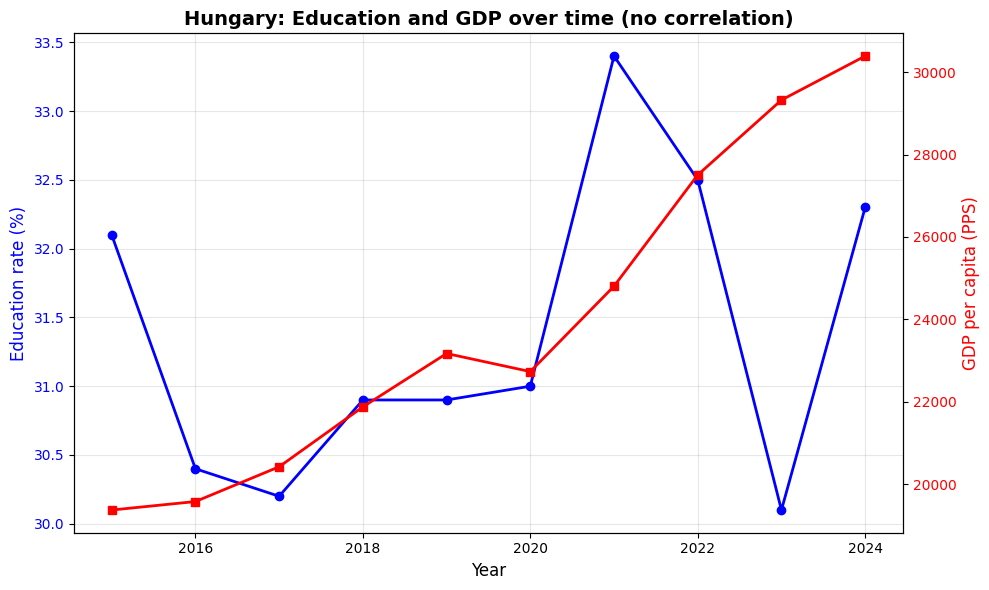
Hypothesis 2: EU countries with a higher education rate have a lower unemployment rate.
We investigate whether there is a relationship between the share of university graduates and the unemployment rate in EU countries.
# Filter df to significant countries
significant_countries = significant_h1['country'].unique()
df_sig = df[df['country'].isin(significant_countries)]
# Use latest available year
latest_year = df_sig['year'].max()
df_latest = df_sig[df_sig['year'] == latest_year]
# Scatter plot with regression line
plt.figure(figsize=(6,4))
sns.regplot(
data=df_latest,
x='education_rate',
y='unemployment_rate',
ci=None,
scatter_kws={'alpha': 0.7},
line_kws={'color': 'red'}
)
# Label country abbreviations
for _, row in df_latest.iterrows():
short = row['country'][:3]
plt.text(
row['education_rate'] + 0.2,
row['unemployment_rate'] + 0.2,
short,
fontsize=8
)
plt.title(f'Unemployment rate vs. education rate - Significant countries ({latest_year})')
plt.xlabel('Share of university graduates (25-34 yrs, %)')
plt.ylabel('Unemployment rate (%)')
plt.tight_layout()
plt.grid(True)
plt.show()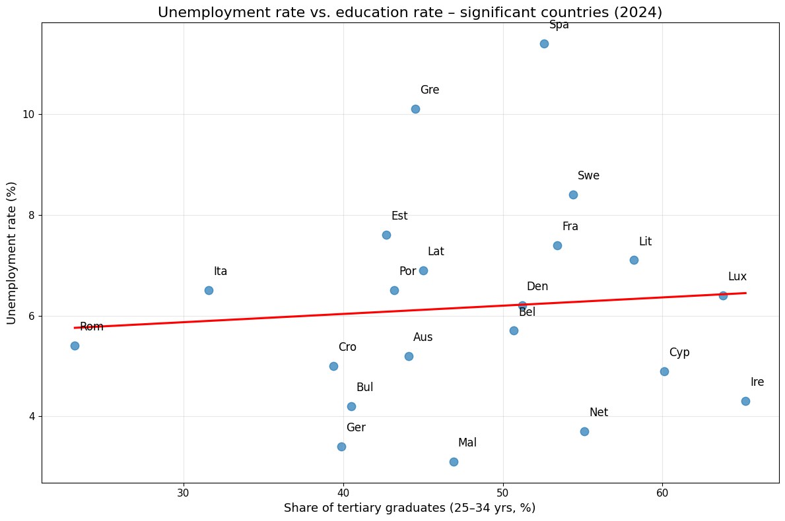
# Interquartile Range (IQR) method for outlier detection in the education rate
# This method identifies countries with unusually high or low education rates
# 1. Calculate quartiles
Q1 = df_latest['education_rate'].quantile(0.25) # 25th percentile
Q3 = df_latest['education_rate'].quantile(0.75) # 75th percentile
IQR = Q3 - Q1 # Interquartile range
# 2. Define thresholds for outliers
lower = Q1 - 1.5 * IQR # Lower bound
upper = Q3 + 1.5 * IQR # Upper bound
# 3. Identify countries with unusual education rates
outliers_high = df_latest[df_latest['education_rate'] > upper]
outliers_low = df_latest[df_latest['education_rate'] < lower]
print("Countries with unusually HIGH education rates:")
print(outliers_high[['country', 'education_rate']])
print("\nCountries with unusually LOW education rates:")
print(outliers_low[['country', 'education_rate']])Countries with unusually HIGH education rates:
Empty DataFrame
Columns: [country, education_rate]
Index: []
Countries with unusually LOW education rates:
country education_rate
239 Romania 23.2
# Interquartile Range (IQR) method for outlier detection in the unemployment rate
# This method identifies countries with unusually high or low unemployment rates
# 1. Calculate quartiles
Q1 = df_latest['unemployment_rate'].quantile(0.25) # 25th percentile
Q3 = df_latest['unemployment_rate'].quantile(0.75) # 75th percentile
IQR = Q3 - Q1 # Interquartile range
# 2. Define thresholds for outliers
lower = Q1 - 1.5 * IQR # Lower bound
upper = Q3 + 1.5 * IQR # Upper bound
# 3. Identify countries with unusual unemployment rates
outliers_high = df_latest[df_latest['unemployment_rate'] > upper]
outliers_low = df_latest[df_latest['unemployment_rate'] < lower]
print("Countries with unusually HIGH unemployment rates:")
print(outliers_high[['country', 'unemployment_rate']])
print("\nCountries with unusually LOW unemployment rates:")
print(outliers_low[['country', 'unemployment_rate']])Countries with unusually HIGH unemployment rates:
country unemployment_rate
99 Spain 11.4
Countries with unusually LOW unemployment rates:
Empty DataFrame
Columns: [country, unemployment_rate]
Index: []
Spain stands out as an outlier with respect to unemployment rate.
eu_ohn_span = [
"Austria", "Belgium", "Bulgaria", "Croatia", "Cyprus", "Czechia", "Denmark", "Estonia", "Finland",
"France", "Germany", "Greece", "Hungary", "Italy", "Latvia", "Lithuania",
"Malta", "Netherlands", "Poland", "Portugal", "Romania", "Slovakia", "Slovenia", "Sweden"
]
df_latest = df_latest[df_latest['country'].isin(eu_ohn_span)]# Scatter plot with linear regression line, without Spain
plt.figure(figsize=(6,4))
sns.regplot(data=df_latest, x='education_rate', y='unemployment_rate', ci=None, scatter_kws={'alpha':0.7}, line_kws={'color':'red'})
# Label country abbreviations
for _, row in df_latest.iterrows():
short = row['country'][:3]
plt.text(row['education_rate'] + 0.2,
row['unemployment_rate'] + 0.2,
short, fontsize=8)
plt.title(f'Unemployment rate vs. education rate in EU countries ({latest_year})')
plt.xlabel('Share of university graduates (25-34 yrs, %)')
plt.ylabel('Unemployment rate (%)')
plt.tight_layout()
plt.grid(True)
plt.show()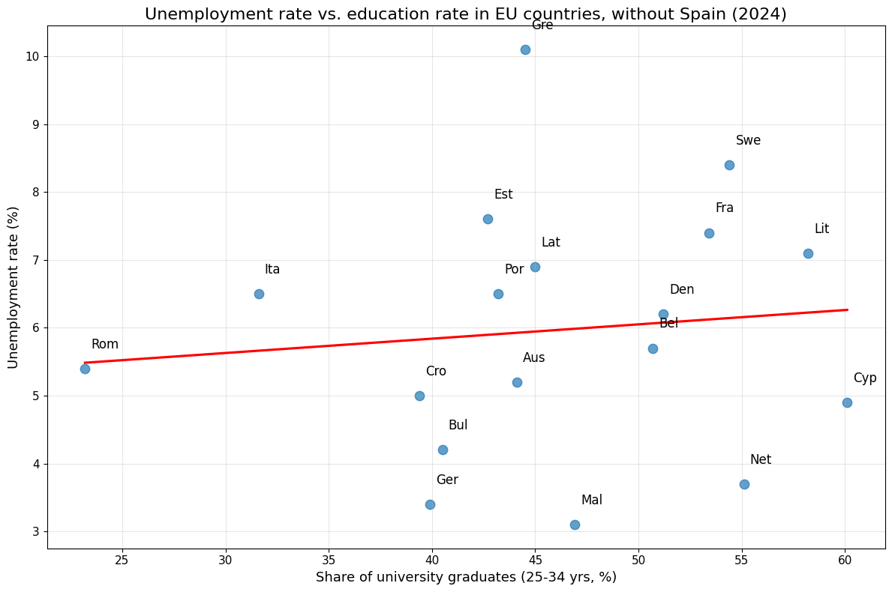
# Correlation for the latest year (across countries, not within a country over time)
r_edu_unemp = df_latest['education_rate'].corr(df_latest['unemployment_rate'])
print(f"Pearson correlation education vs. unemployment: {r_edu_unemp:.2f}")Pearson correlation education vs. unemployment: 0.11
There appears to be no correlation: the points are fairly scattered and the regression line is nearly horizontal, with a Pearson correlation of only 0.11. This suggests the education rate has no strong cross-country effect on the unemployment rate in a given year. To dig deeper, we calculate the correlation coefficients for each country individually over time.
# Calculate the correlation between education rate and unemployment for each country over time
results = []
for country in df['country'].unique():
country_data = df[df['country'] == country]
correlation, p_value = pearsonr(country_data['education_rate'], country_data['unemployment_rate'])
# Store the results
results.append({
'country': country,
'correlation': correlation,
'p_value': p_value
})
# Results as a DataFrame
results_df = pd.DataFrame(results)
# Sort by correlation strength
results_df = results_df.sort_values('correlation', ascending=False)
results_df| country | correlation | p_value | |
|---|---|---|---|
| 1 | Sweden | 0.454177 | 0.187308 |
| 2 | Romania | 0.342317 | 0.332932 |
| 3 | Hungary | 0.132712 | 0.714751 |
| 4 | Estonia | -0.023265 | 0.949135 |
| 5 | Poland | -0.229694 | 0.523225 |
| 6 | Finland | -0.232104 | 0.518752 |
| 7 | Luxembourg | -0.243865 | 0.497153 |
| 8 | Slovenia | -0.298596 | 0.402010 |
| 9 | Denmark | -0.380835 | 0.277597 |
| 10 | Lithuania | -0.420811 | 0.225895 |
| 11 | Germany | -0.517715 | 0.125342 |
| 12 | Austria | -0.594752 | 0.069742 |
| 13 | Bulgaria | -0.605202 | 0.063748 |
| 14 | Czechia | -0.671122 | 0.033621 |
| 15 | Ireland | -0.727487 | 0.017099 |
| 16 | Latvia | -0.743776 | 0.013655 |
| 17 | Portugal | -0.753969 | 0.011765 |
| 18 | Malta | -0.822923 | 0.003453 |
| 19 | Belgium | -0.843557 | 0.002160 |
| 20 | Netherlands | -0.877430 | 0.000849 |
| 21 | Slovakia | -0.907364 | 0.000288 |
| 22 | Cyprus | -0.918557 | 0.000174 |
| 23 | Spain | -0.922108 | 0.000146 |
| 24 | Croatia | -0.927314 | 0.000112 |
| 25 | Greece | -0.930125 | 0.000096 |
| 26 | France | -0.945687 | 0.000036 |
| 27 | Italy | -0.976653 | 0.000001 |
# Split countries into significant (p <= 0.05) and not significant
significant_df = results_df[(results_df['p_value'] <= 0.05)]
significant_df = significant_df.sort_values(by='correlation', ascending=True).reset_index(drop=True)
significant_df.index += 1
nsignificant_df = results_df[(results_df['p_value'] > 0.05)]
nsignificant_df = nsignificant_df.loc[
nsignificant_df['correlation'].abs().sort_values().index
].reset_index(drop=True)
nsignificant_df.index += 1
print(significant_df.head(10))
print(significant_df.count())| country | correlation | p_value | |
|---|---|---|---|
| 1 | Italy | -0.976653 | 0.000001 |
| 2 | France | -0.945687 | 0.000036 |
| 3 | Greece | -0.930125 | 0.000096 |
| 4 | Croatia | -0.927314 | 0.000112 |
| 5 | Spain | -0.922108 | 0.000146 |
| 6 | Cyprus | -0.918557 | 0.000174 |
| 7 | Slovakia | -0.907364 | 0.000288 |
| 8 | Netherlands | -0.877430 | 0.000849 |
| 9 | Belgium | -0.843557 | 0.002160 |
| 10 | Malta | -0.822923 | 0.003453 |
| 11 | Portugal | -0.753969 | 0.011765 |
| 12 | Latvia | -0.743776 | 0.013655 |
| 13 | Ireland | -0.727487 | 0.017099 |
| 14 | Czechia | -0.671122 | 0.033621 |
In 14 countries there is a statistically significant, moderate-to-strong relationship between education rate and unemployment rate.
| country | correlation | p_value | |
|---|---|---|---|
| 1 | Estonia | -0.023265 | 0.949135 |
| 2 | Hungary | 0.132712 | 0.714751 |
| 3 | Poland | -0.229694 | 0.523225 |
| 4 | Finland | -0.232104 | 0.518752 |
| 5 | Luxembourg | -0.243865 | 0.497153 |
| 6 | Slovenia | -0.298596 | 0.402010 |
| 7 | Romania | 0.342317 | 0.332932 |
| 8 | Denmark | -0.380835 | 0.277597 |
| 9 | Lithuania | -0.420811 | 0.225895 |
| 10 | Sweden | 0.454177 | 0.187308 |
| 11 | Germany | -0.517715 | 0.125342 |
| 12 | Austria | -0.594752 | 0.069742 |
| 13 | Bulgaria | -0.605202 | 0.063748 |
In 13 countries there is either no clear correlation or no statistically significant result.
# Visualization: bar chart of the correlations (sorted)
plt.figure(figsize=(10, 8))
# Color significant vs. non-significant countries differently
colors = ['blue' if p < 0.05 else 'lightgray' for p in results_df['p_value']]
plt.barh(results_df['country'], results_df['correlation'], color=colors)
plt.xlabel('Pearson correlation (education vs. unemployment)', fontsize=12)
plt.ylabel('Country', fontsize=12)
plt.title('Correlation between education rate and unemployment rate\n(blue = significant p<0.05)', fontsize=14, fontweight='bold')
plt.axvline(x=0, color='black', linestyle='--', linewidth=0.8)
plt.grid(axis='x', alpha=0.3)
plt.tight_layout()
plt.show()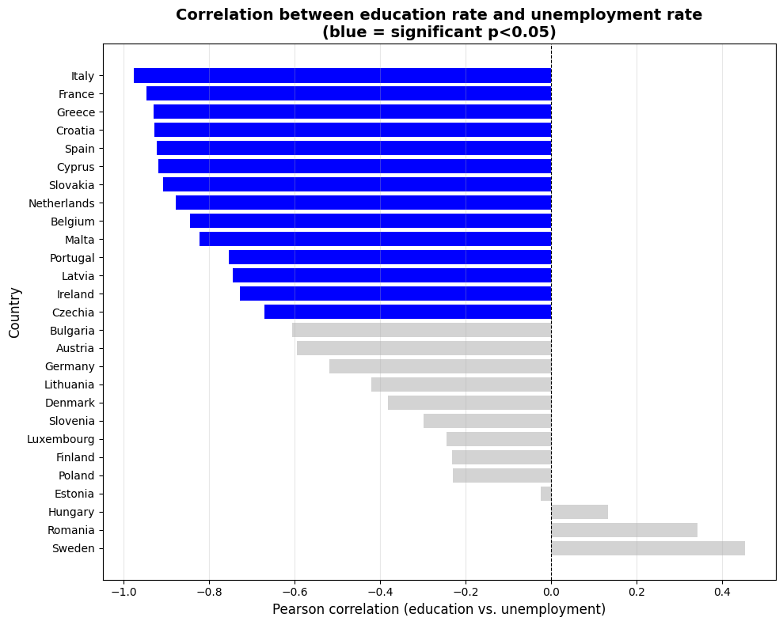
In 14 of 27 EU countries (52%), there is a statistically significant correlation between education rate and unemployment rate (p < 0.05). However, this relationship is less consistent than for Hypothesis 1 (78%). The hypothesis is confirmed only partially: the relationship exists, but it is weaker and less uniform than for the other hypotheses.
import matplotlib.pyplot as plt
# Filter the data for Italy
data = df[df['country'] == 'Italy']
# Create the plot (538 x 387 px)
fig, ax1 = plt.subplots(figsize=(5.38, 3.87), dpi=100)
# First y-axis: Education rate
ax1.set_xlabel('Year')
ax1.set_ylabel('Education rate (%)', color='blue')
ax1.plot(data['year'], data['education_rate'],
color='blue', marker='o', label='Education rate')
ax1.tick_params(axis='y', labelcolor='blue')
# Second y-axis: Unemployment rate
ax2 = ax1.twinx()
ax2.set_ylabel('Unemployment rate (%)', color='red')
ax2.plot(data['year'], data['unemployment_rate'],
color='red', marker='s', label='Unemployment rate')
ax2.tick_params(axis='y', labelcolor='red')
# Title and layout
plt.title('Education rate vs. unemployment rate in Italy over the years')
fig.tight_layout()
# Optional: save exactly as 538x387 px
plt.savefig("italy_plot.png", dpi=100)
plt.show()
italy_row = significant_df[significant_df['country'] == 'Italy']
r = italy_row['correlation'].values[0]
p = italy_row['p_value'].values[0]
print(f"Italy - Correlation (r): {r:.2f}, p-value: {p:.6f}")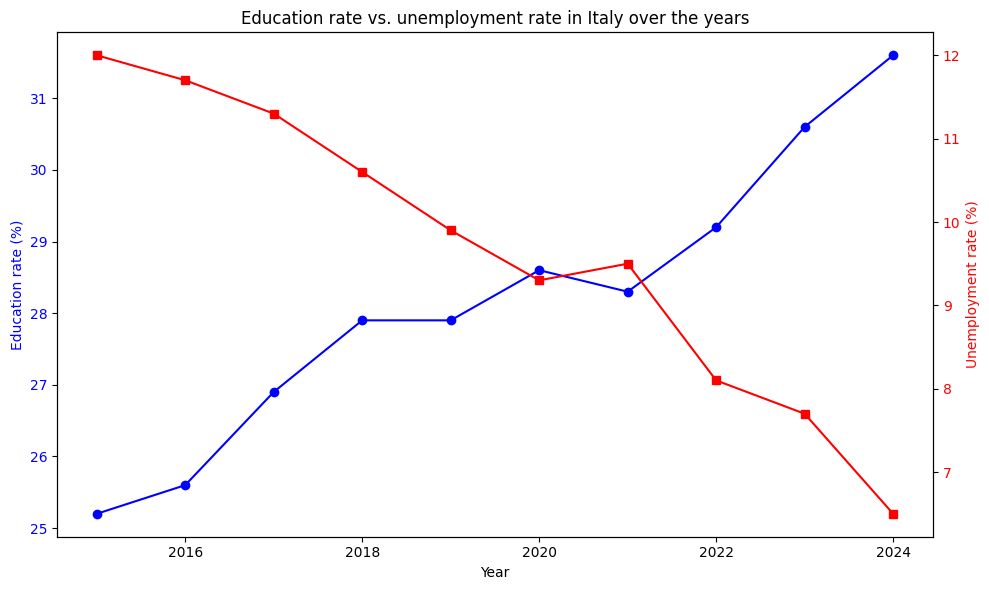
Italy - Correlation (r): -0.98, p-value: 0.000001
Italy shows the strongest negative correlation (r = -0.98, p = 0.000001), which indicates that in Italy a higher share of university graduates is associated with a lower unemployment rate.
# Filter the data for Estonia
data = df[df['country'] == 'Estonia']
# Create the plot
fig, ax1 = plt.subplots(figsize=(10, 6))
# First y-axis: education rate
ax1.set_xlabel('Year')
ax1.set_ylabel('Education rate (%)', color='blue')
ax1.plot(data['year'], data['education_rate'], color='blue', marker='o', label='Education rate')
ax1.tick_params(axis='y', labelcolor='blue')
# Second y-axis: unemployment rate
ax2 = ax1.twinx()
ax2.set_ylabel('Unemployment rate (%)', color='red')
ax2.plot(data['year'], data['unemployment_rate'], color='red', marker='s', label='Unemployment rate')
ax2.tick_params(axis='y', labelcolor='red')
# Title and layout
plt.title('Education rate vs. unemployment rate in Estonia over the years')
fig.tight_layout()
plt.show()
estonia_row = nsignificant_df[nsignificant_df['country'] == 'Estonia']
r = estonia_row['correlation'].values[0]
p = estonia_row['p_value'].values[0]
print(f"Estonia - Correlation (r): {r:.2f}, p-value: {p:.6f}")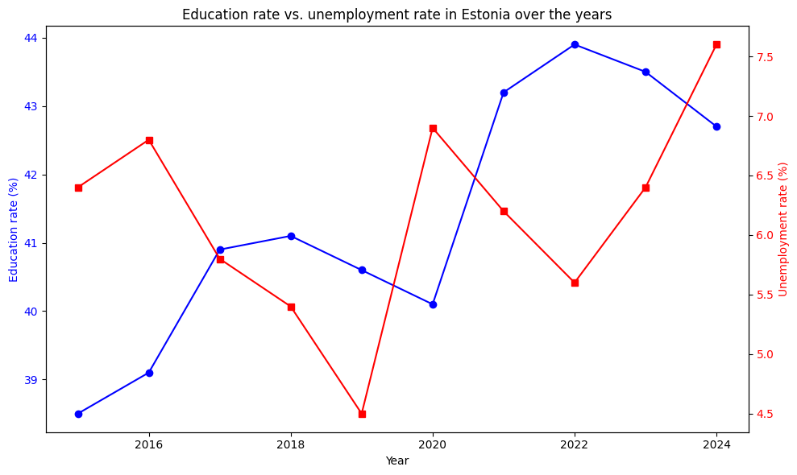
Estonia - Correlation (r): -0.02, p-value: 0.949135
In Estonia there is no discernible relationship between education rate and unemployment rate (r = -0.02, p = 0.95).
Hypothesis 3: Do countries with a higher GDP per capita have a lower unemployment rate?
We investigate whether there is a relationship between GDP per capita and the unemployment rate in EU countries.
# Calculate the correlation between GDP per capita and unemployment for each country over time
results_h3 = []
for country in df['country'].unique():
country_data = df[df['country'] == country]
# Pearson correlation between GDP per capita and unemployment rate
correlation, p_value = pearsonr(country_data['gdp_per_capita'], country_data['unemployment_rate'])
# Store the results
results_h3.append({
'country': country,
'correlation': correlation,
'p_value': p_value
})
# Results as a DataFrame
df_corr_h3 = pd.DataFrame(results_h3)
# Sort by correlation strength
df_corr_h3_sorted = df_corr_h3.sort_values('correlation', ascending=False)
print(df_corr_h3_sorted)country correlation p_value 24 Sweden 0.532556 0.113009 7 Estonia 0.148055 0.683136 13 Hungary -0.371537 0.290467 17 Luxembourg -0.378764 0.280437 6 Denmark -0.380718 0.277758 16 Lithuania -0.484718 0.155649 10 Finland -0.526478 0.117963 26 Slovakia -0.600009 0.066683 5 Germany -0.601055 0.066085 22 Portugal -0.632833 0.049557 4 Czechia -0.633705 0.049148 23 Romania -0.645236 0.043938 0 Austria -0.657322 0.038889 1 Belgium -0.677958 0.031200 18 Latvia -0.772185 0.008859 12 Croatia -0.781498 0.007588 14 Ireland -0.783730 0.007304 21 Poland -0.797047 0.005763 9 Spain -0.805112 0.004952 20 Netherlands -0.820480 0.003636 25 Slovenia -0.849981 0.001841 2 Bulgaria -0.855321 0.001604 11 France -0.861794 0.001346 3 Cyprus -0.864552 0.001246 8 Greece -0.879355 0.000799 19 Malta -0.881841 0.000738 15 Italy -0.929077 0.000102
# Split countries into significant (p < 0.05) and not significant
significant_h3 = df_corr_h3[df_corr_h3['p_value'] < 0.05].sort_values('correlation', ascending=False)
not_significant_h3 = df_corr_h3[df_corr_h3['p_value'] >= 0.05].sort_values('correlation', ascending=False)
print("Significant correlations (p < 0.05)")
print(significant_h3)
print(f"Number of countries with significant correlation: {len(significant_h3)}")
print("Not significant correlations (p >= 0.05)")
print(not_significant_h3)
print(f"Number of countries without significant correlation: {len(not_significant_h3)}")Significant correlations (p < 0.05)
country correlation p_value
22 Portugal -0.632833 0.049557
4 Czechia -0.633705 0.049148
23 Romania -0.645236 0.043938
0 Austria -0.657322 0.038889
1 Belgium -0.677958 0.031200
18 Latvia -0.772185 0.008859
12 Croatia -0.781498 0.007588
14 Ireland -0.783730 0.007304
21 Poland -0.797047 0.005763
9 Spain -0.805112 0.004952
20 Netherlands -0.820480 0.003636
25 Slovenia -0.849981 0.001841
2 Bulgaria -0.855321 0.001604
11 France -0.861794 0.001346
3 Cyprus -0.864552 0.001246
8 Greece -0.879355 0.000799
19 Malta -0.881841 0.000738
15 Italy -0.929077 0.000102
Number of countries with significant correlation: 18
Not significant correlations (p >= 0.05)
country correlation p_value
24 Sweden 0.532556 0.113009
7 Estonia 0.148055 0.683136
13 Hungary -0.371537 0.290467
17 Luxembourg -0.378764 0.280437
6 Denmark -0.380718 0.277758
16 Lithuania -0.484718 0.155649
10 Finland -0.526478 0.117963
26 Slovakia -0.600009 0.066683
5 Germany -0.601055 0.066085
Number of countries without significant correlation: 9
# Visualization: bar chart of the correlations (sorted)
plt.figure(figsize=(10, 8))
# Color significant vs. non-significant countries differently
colors = ['blue' if p < 0.05 else 'lightgray' for p in df_corr_h3_sorted['p_value']]
plt.barh(df_corr_h3_sorted['country'], df_corr_h3_sorted['correlation'], color=colors)
plt.xlabel('Pearson correlation (GDP vs. unemployment)', fontsize=12)
plt.ylabel('Country', fontsize=12)
plt.title('Correlation between GDP per capita and unemployment rate\n(blue = significant p<0.05)', fontsize=14, fontweight='bold')
plt.axvline(x=0, color='black', linestyle='--', linewidth=0.8)
plt.grid(axis='x', alpha=0.3)
plt.tight_layout()
plt.show()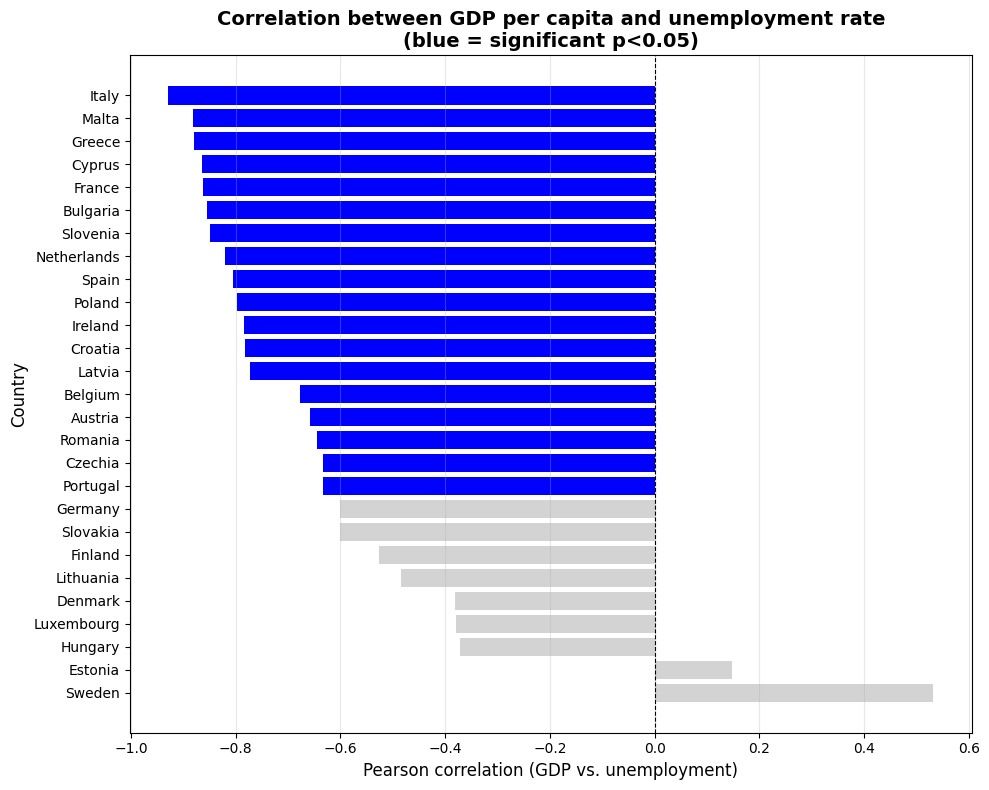
The hypothesis is confirmed for 66.6% of the countries examined (18 of 27). In these countries there is a significant negative relationship: as GDP per capita rises, the unemployment rate falls.
# Example 1: Country with a strong negative correlation (high GDP → low unemployment)
best_country = significant_h3.iloc[0]['country']
data_best = df[df['country'] == best_country]
# Create plot with two y-axes
fig, ax1 = plt.subplots(figsize=(10, 6))
# Plot GDP (blue line)
ax1.plot(data_best['year'], data_best['gdp_per_capita'],
color='blue', marker='o', linewidth=2)
ax1.set_xlabel('Year', fontsize=12)
ax1.set_ylabel('GDP per capita (PPS)', color='blue', fontsize=12)
ax1.tick_params(axis='y', labelcolor='blue')
ax1.grid(alpha=0.3)
# Plot unemployment (red line, other axis)
ax2 = ax1.twinx()
ax2.plot(data_best['year'], data_best['unemployment_rate'],
color='red', marker='s', linewidth=2)
ax2.set_ylabel('Unemployment rate (%)', color='red', fontsize=12)
ax2.tick_params(axis='y', labelcolor='red')
# Title
plt.title(f'{best_country}: GDP and unemployment over time (correlation)', fontsize=14, fontweight='bold')
plt.tight_layout()
plt.show()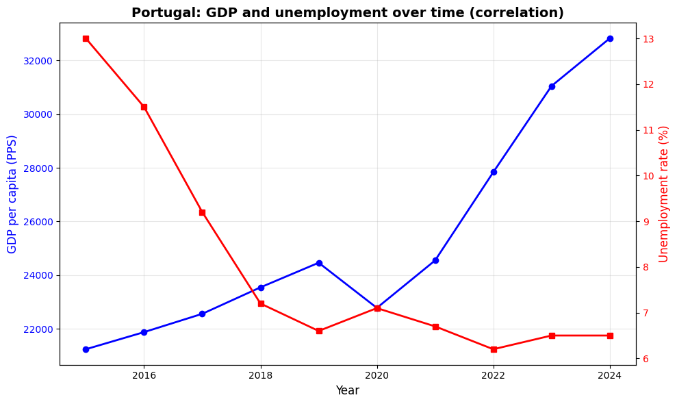
# Example 2: Country without significant correlation
weak_country = not_significant_h3.iloc[3]['country']
data_weak = df[df['country'] == weak_country]
fig, ax1 = plt.subplots(figsize=(10, 6))
# GDP
ax1.plot(data_weak['year'], data_weak['gdp_per_capita'],
color='blue', marker='o', linewidth=2)
ax1.set_xlabel('Year', fontsize=12)
ax1.set_ylabel('GDP per capita (PPS)', color='blue', fontsize=12)
ax1.tick_params(axis='y', labelcolor='blue')
ax1.grid(alpha=0.3)
# Unemployment
ax2 = ax1.twinx()
ax2.plot(data_weak['year'], data_weak['unemployment_rate'],
color='red', marker='s', linewidth=2)
ax2.set_ylabel('Unemployment rate (%)', color='red', fontsize=12)
ax2.tick_params(axis='y', labelcolor='red')
plt.title(f'{weak_country}: GDP and unemployment over time (no correlation)', fontsize=14, fontweight='bold')
plt.tight_layout()
plt.show()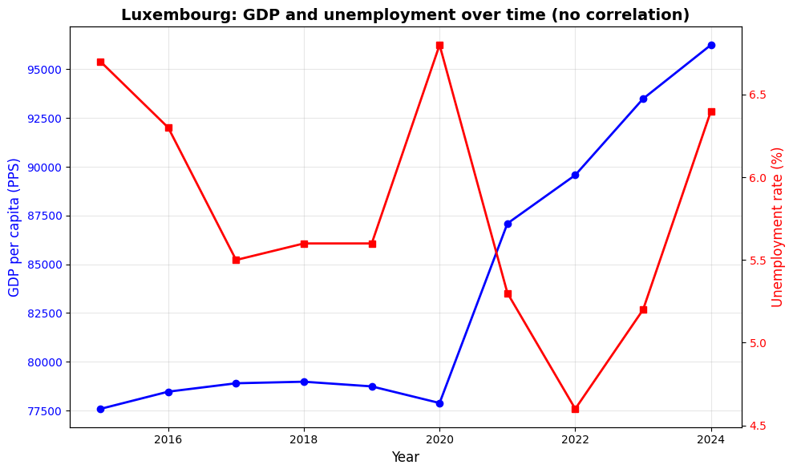
The demonstrated correlations do not prove causality. A rising GDP and a rising education rate can also be the result of a shared third factor (e.g., general technological progress over time), without one directly causing the other.
The analysis examined correlations within individual countries over time. Comparing country averages with each other would probably have been more robust to test whether "smarter" countries are also "richer" countries.